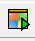

输入输出小推车
给程序加点料
已经完成了一个非常简单的c++程序，不过太简单一点也不吸引人。
现在要给他加点东西，至少让程序说一句“你好 主人”。
让程序说话
想让程序输出你好主人那就需要用到一个工具，这个工具叫做iostream其实他是一个工具箱里面有很多工具。
中文名字我叫他“输入输出工具箱”里面有out(输出)工具、in(输入)工具。这两个工具像小推车可以装上东西往外送，也可以把东西运到程序里去。
来实际使用一下，先看一下完整的代码。
#include <iostream> //打开工具箱
int main() { //入口
std::cout << "你好 主人" ;//输出内容 你好 主人
return 0;//出口
}
其中
#include <iostream> //打开工具箱
工具在使用之前把它先拿出来，所以这一行往往放在最前面。include(包含)就是相当于拿出工具箱。
std::cout << "你好 主人" //c out
c++是从c发展而来可以看到这里out(输出)用了cout在前面加了c。 那么"你好 主人"就是程序要输出的内容,而<<像一个指示方向把要输出的东西装上cout小车。std::又是什么？可以理解成工具箱所在的房间。
当点击
开始检查是否有错误并把刚刚的新代码翻译成机器能理解的程序。通常叫他编译并运行。假如没有问题将看到如下：
你好 主人
--------------------------------
Process exited after 0.2513 seconds with return value 0
请按任意键继续. . .
提高一点点
要求把你好 主人一行输出变成两行，其中一行输出你好，下一行输出 主人。
这里就需要一个换行工具，来看一下代码。
#include <iostream> //打开工具箱
int main() { //入口
std::cout << "你好";
std::cout<<std::endl;//换行工具
std::cout<<"主人" ;
return 0;//出口
}
其中endl就是换行，前面的std就是这个工具所在的房间。
给人看的注解
在上面的代码中常看到 // 后面跟着很多中文字。其实//后面的字通常给人看。这样的东西一般称为注解。如果有很多行注解应该怎么写呢？来举个例子。
#include <iostream> //打开工具箱
/*
这里也是注解
第二行注解
*/
int main() { //入口
std::cout << "你好 主人" ;//cout输出内容
return 0;//出口
}
使用 // 和 /*.... */ 来注解这样有了注解更好理解。
来聊聊输入
程序可以输出文字是不是也可以输入文字呢？那当然可以。 先来看一个例子
#include <iostream> //打开工具箱
int main() {
std::string word; //它存放输入的内容
std::cout << "请输入文字：" ; //输出一行内容
std::cin >> word; //等待输入
std::cout << "输入的是 " << word; //输出结果
return 0;
}
其中有两行很特别
std::string word; //它存放输入的内容
这一行可以理解成准备一个盒子，盒子的名字叫word当然也可以用一个其他名字。这个盒子适合装输入的文字。
std::cin >> word; //等待输入
这里in(输入)但是前面有一个字母c， 所以cin就是程序输入，后面跟着>>就像一个指示，指示程序把输入的东西装进叫word盒子然后送到程序之中。
这个程序都做了写什么？
- 首先它输出了
请输入文字：这几个字 - 然后就来到cin这个时候可以打入文件
- 现在打入的文字已经装在word里了
- 最后把
输入的是和装在word里的文字一起显示出来
挑战我能行
要求:来做一个程序实现自我介绍。输出如下
金老师好！我叫孙悟空！
孙是孙子的孙！悟是觉悟的悟！空是空气的空！
我来自西红市小学！
我嘛……第一次学！请多指教！
My English name is Ailan!
--------------------------------
Process exited after 0.227 seconds with return value 0
请按任意键继续. . .
请🧪试一下 ⏳
请勿打开!!! 💡锦囊妙计-自我介绍
假如实在做不出来，可以打开锦囊妙计 📢锦囊妙计-自我介绍
🌰 🤓 💬 📢 ⏳ 💌 📖 📘 📚 📄 🧪 💯